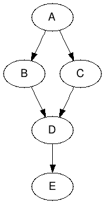

Infelicities
There are a number of areas for improvement, including but not limited to the following:
Alternative Syntax Support
Although there should be a single encouraged syntax so as to facilitate communication among developers, we realize that the syntax has yet to learn from broader exposure to real-world use cases and user (developer) feedback, and to that end we want to encourage some degree of exploration/experimentation. We also want to provide the basic infrastructure to make writing alternative syntaxes easy (if we can't stop you, we might as well make it clean to "fork").
Structural Attribute Bindings
Currently, attributes are strings. For most attributes this is fine, but for
certain attributes such as style, we could have a simple convenience
preprocessor that takes in an object map of the style names and renders the
string. This could be extended to lists for class and so on.
Topologically Ordered Visits
If we consider the DAG of dependencies among observable nodes, when there's an event being propagated through the system, the notifications currently visit nodes in depth-first order. However, the most efficient order in which to propagate changes is by processing the events of the nodes in topologically sorted order. For instance, consider the following DAG:
A -> B
A -> C
B -> D
C -> D
D -> E
If A is updated, then we'd currently perform a recursive descent starting at
A and visit the nodes in this order:
A, B, D, E, C, D, EHowever, if we kept track of the DAG, then we could process the nodes in topologically sorted order:
A, B, C, D, EThis guarantees avoiding multiple visits to the same node.
Lazy Event Notification
More flexible-but-still-efficient array (and other data structure) mutations. Currently arrays have built-in mechanisms for efficient propagation of events such as insertion, removal, splicing, etc. However, for more involved transformations, or if we want to reuse existing array transformation code, we can still do better than re-evaluating all dependents downstream by figuring out what has changed, and then propagating the diff's or operations (such as reorderings) for more efficient downstream handling.
This can be extended to arbitrary object types/data structures beyond arrays and should be configurable, with the ability to substitute in various change detection or diffing algorithms.
Transitions
Ability to apply animations and effects to things like entrances, exits, and reorderings. See the d3 transitions API for something I'm keen on borrowing from.
DAG Debugger
A facility to visualize the DAG of dependencies would make code debugging and understanding easier.
Tests
And examples. Need more tests and examples. 'Nuff said.